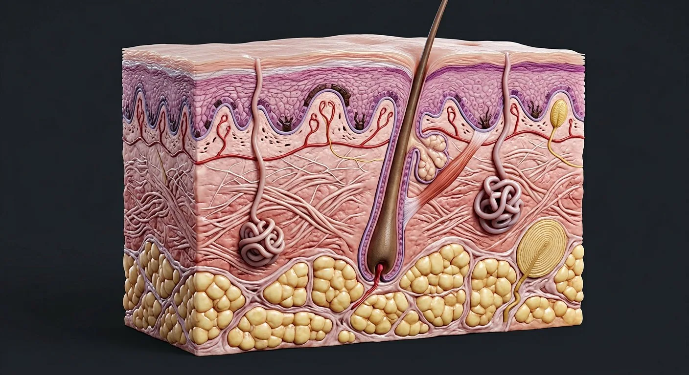

ORGAN → UNDER THE LENS
Epidermal and dermal layers
Tap to compare the organ region with a tissue-level teaching illustration.
Read about Stratum basale ↓The five thick-skin epidermal strata, two dermal zones, hypodermis, receptors and follicle–gland units.

Epidermis is a stratified keratinizing epithelium nourished by diffusion from vascular dermis. From deep to superficial: basale, spinosum, granulosum, optional lucidum (most evident in thick skin), and corneum. Basement membrane joins epidermis to papillary dermis; reticular dermis provides strength. The hypodermis is adipose-rich subcutis beneath the dermis. Hair, sebaceous glands and most sweat glands are skin appendages; cutaneous receptors relay varied forms of mechanical and thermal input.
These are educational cutaways, not literal magnifications of an organ pixel or laboratory slides. A ring marks the approximate tissue region; part-specific lines appear only where identifiable.
Tap to compare the organ region with a tissue-level teaching illustration.
Read about Stratum basale ↓These 19 structures describe anatomy related to the chapter’s regional illustration. Each entry separates location, function and a clinical point.
Deep single proliferative keratinocyte layer adjoining basement membrane.
What it doesRenews overlying epidermis.
Clinical connectionBasal-cell carcinoma derives from basal-type cells.
Several layers of keratinocytes strongly joined by desmosomes.
What it doesProvides mechanical cohesion.
Clinical connectionDesmosomal disruption causes epidermal blistering.
Flattened keratinocytes with keratohyalin granules and lipid-releasing lamellar bodies.
What it doesBuilds the water-permeability barrier.
Clinical connectionBarrier injury increases transepidermal water loss.
Thin translucent transition zone most apparent in glabrous palms and soles.
What it doesAdds specialized layer in thick skin.
Clinical connectionDo not expect a distinct lucidum in ordinary thin hairy skin.
Anucleate flattened corneocytes surrounded by intercellular lipid lamellae.
What it doesPrincipal external permeability barrier.
Clinical connectionLoss in large burns causes fluid and heat loss.
Anchoring complex joining epidermis to dermis with hemidesmosomes and matrix.
What it doesResists separation and supports renewal.
Clinical connectionPlane of separation distinguishes blister disorders.
Fingerlike papillary dermal projections interlocking with epidermal ridges.
What it doesIncrease attachment surface and house capillary loops.
Clinical connectionRete ridge pattern varies by body site.
Superficial loose connective tissue with capillaries and fine collagen.
What it doesNourishes avascular epidermis by diffusion.
Clinical connectionSuperficial wounds may preserve deep appendages.
Deeper dense irregular collagen-and-elastin connective tissue.
What it doesProvides tensile strength and elasticity.
Clinical connectionFull-thickness injury through reticular dermis commonly scars.
Adipose lobules and connective septa deep to the dermis.
What it doesInsulation, cushioning and movable attachment.
Clinical connectionNot one of the histologic dermal layers.
Neural-crest-derived pigment cells mainly in basal epidermis.
What it doesTransfer melanosomes to keratinocytes for UV protection.
Clinical connectionMelanoma originates from melanocytes.
Antigen-presenting dendritic cells mainly in suprabasal epidermis.
What it doesSupport immune surveillance.
Clinical connectionInflammatory responses involve epidermal immune cells.
Epidermal downgrowth containing bulb, matrix and hair shaft.
What it doesGrows hair; joins pilosebaceous unit.
Clinical connectionGlabrous palms and soles lack hair follicles.
Holocrine gland usually opening into a hair follicle.
What it doesSecretes sebum onto hair and skin.
Clinical connectionFollicular blockage/inflammation contributes to acne.
Coiled secretory gland in deep dermis with duct to skin surface.
What it doesEvaporation cools the body.
Clinical connectionSympathetic cholinergic fibers drive most thermoregulatory sweating.
Large gland associated with follicles in axilla and selected regions.
What it doesProduces viscous secretion, especially after puberty.
Clinical connectionNot the principal sweat gland for whole-body cooling.
Encapsulated rapidly adapting receptor in dermal papillae of glabrous skin.
What it doesDetects light touch and low-frequency motion.
Clinical connectionContributes to fingertip tactile discrimination.
Deep onion-like lamellar receptor in dermis/subcutis.
What it doesDetects vibration and deep pressure change.
Clinical connectionVibratory sense can be tested clinically.
Unencapsulated terminals extending into superficial skin.
What it doesCarry pain, temperature and itch signals.
Clinical connectionSmall-fiber neuropathy may impair these modalities.
These 1 additional entries give anatomical context. They are deliberately not assigned a photographic pin on the regional image.
Related deep chapters: Skin.
The single basal row of dividing keratinocytes on the basement membrane, plus the prickle-cell layers above with desmosomes, melanocytes and Langerhans cells.
What it doesRenews the epidermis; melanocytes transfer pigment; Langerhans cells present antigen.
Clinical connectionBasal cell carcinoma arises here at sun-exposed sites; melanoma from melanocytes.
Short answers grounded in the structures described above. Use the illustrated guide for anatomical context.
From deep to superficial they are stratum basale, spinosum, granulosum, lucidum and corneum. Thin skin does not have a distinct lucidum.
No. The epidermis receives nutrients by diffusion from capillaries in the underlying dermis.
Deep single proliferative keratinocyte layer adjoining basement membrane. Function: Renews overlying epidermis.
Flattened keratinocytes with keratohyalin granules and lipid-releasing lamellar bodies. Function: Builds the water-permeability barrier.
Function: Principal external permeability barrier. Anucleate flattened corneocytes surrounded by intercellular lipid lamellae.
General anatomy references and related source chapters for continued study. These links do not make the digital illustrations clinical images or certify every anatomical variant.
This educational page is not medical advice and has not undergone formal clinical peer review. Spotted an error? Contact the editor.
Open the realistic interactive plate, label lines, focus view and self-test.